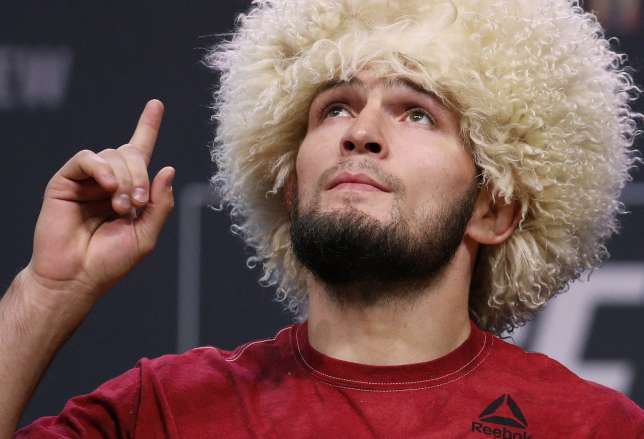

Khabib Abdulmanapovich Nurmagomedov was born in 1988 to an ethnic Avar family in Dagestan, Russia. He has one older brother, and one younger sister.
As is common with many children in Dagestan, he began wrestling from an early age: he started at the age of eight under the tutelage of his father, Abdulmanap Nurmagomedov.
A decorated athlete and a veteran of the Soviet Army, Abdulmanap had also wrestled from an early age, before undergoing training in judo and sambo in the military.
Abdulmanap was a senior coach for the combat sambo national team in the Republic of Dagestan, training several athletes in sambo in Makhachkala, Russia.
Khabib said that, along with his father, three athletes who inspired him were the American boxers Muhammad Ali and Mike Tyson and the Brazilian footballer Ronaldo.
Nurmagomedov made his professional MMA debut in September 2008, he compiled four wins in under a month. On 11 October, he became the inaugural Atrium Cup tournament champion, having defeated his three opponents at the Moscow event. Over the next three years, he went undefeated, finishing 11 out of 12 opponents. These included a first-round armbar finish of future Bellator title challenger Shahbulat Shamhalaev, which marked his M-1 Global debut.
A 16–0 record in the regional circuits of Russia and Ukraine generated interest from the Ultimate Fighting Championship (UFC) in signing Nurmagomedov. Later, Nurmagomedov's father revealed in an interview that due to a contract dispute with ProFC they had 11 court cases contesting the legitimacy of Nurmagomedov's UFC contract. After losing six and winning five cases, they reached an agreement and Khabib was able to continue his career.
On Friday, 3 August 2018, the UFC announced that Nurmagomedov would make his first defence of his lightweight title against Conor McGregor at UFC 229 on October 6 in Las Vegas. In the fight, Nurmagomedov won the first two rounds, but lost the third round to McGregor. It was the first time Nurmagomedov lost a round in his UFC career. He managed to defeat McGregor in the fourth round via submission. After the contest, Nurmagomedov scaled the Octagon and tried to attack McGregor's teammate Dillon Danis, which resulted in a brawl between the two teams. After the bout against the Irishman, Khabib improved his record to 27–0 which was then the longest win streak in UFC history. The event drew 2.4 million pay-per-view buys, the most ever for an MMA event.
Despite attempted negotiations to bring him back for one more fight, UFC president Dana White announced on 19 March 2021 that he had accepted Nurmagomedov's decision to retire and that the UFC Lightweight Championship had been officially vacated.
On July 1, 2022, Nurmagomedov was inducted into the UFC Hall of Fame on the International Fight Week in Las Vegas.